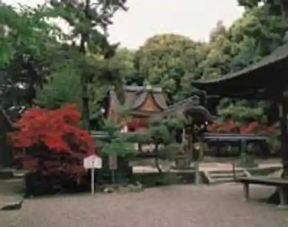
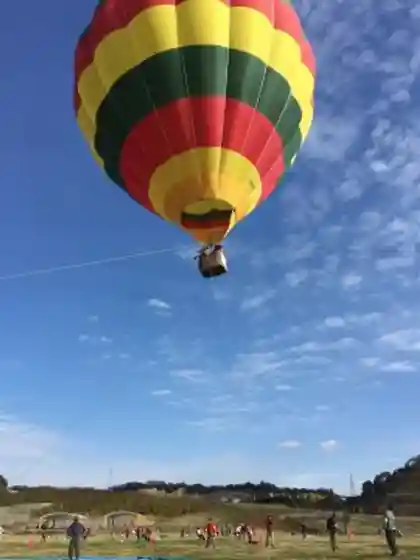
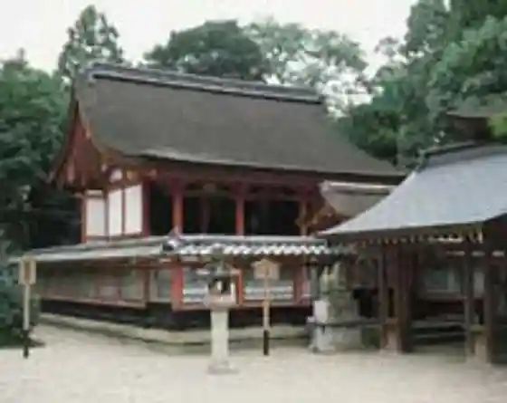

Joyo Sogo Sports Park (Ko no Suyama Sports Park)
Joyo, Kyoto · 0774-55-6222 · Official / source link
Mizu Do Shrine
Joyo, Kyoto · 0774-53-9870 · Official / source link

Joho Onsen Ikkyu Kyoto Honkan
Joyo, Kyoto · 0774-54-1419 · Official / source link

Kyotofuritsu Kizugawa Sports Park (Joyo Go Sato Go Sato no Oka)
Joyo, Kyoto · 0774-66-6022 · Official / source link

Ko Ken Shrine
Joyo, Kyoto · 0774-52-2014 · Official / source link

Airisuin Joyo
Joyo, Kyoto · 0774-55-7811 · Official / source link
Bunka Paruku Joyo
Joyo, Kyoto · 0774-55-1010 · Official / source link
Puramuin Joyo
Joyo, Kyoto · 0774-58-0010 · Official / source link
Ko no Suyama
Joyo, Kyoto · 0774-56-4019 · Official / source link
Koeki Zaidanhojin Seishonen Yagaikatsudo Sogo Center (Yuai no Oka)
Joyo, Kyoto · 0774-53-3566 · Official / source link
Kuze Shrine
Joyo, Kyoto · Official / source link
Ippan Shadanhojin Joyo Tourism Association
Joyo, Kyoto · 0774-56-4029 · Official / source link
Joyo Shuzo
Joyo, Kyoto · 0774-52-0003 · Official / source link
Kamitsu Ya no Hama Cha
Joyo, Kyoto · 0774-56-4005 · Official / source link
Kamo Tani Falls
Joyo, Kyoto · 0774-56-4029 · Official / source link
Joyo Jun Na City Chokubai Tokoro
Joyo, Kyoto · 0774-52-0382 · Official / source link
Historic Site Moriyama Iseki
Joyo, Kyoto · Official / source link
Sakura Zutsumi (Kizugawa Midori to Suihen no Yasuragi Kairo)
Joyo, Kyoto · Official / source link
Historic Site Seido Kanga Iseki
Joyo, Kyoto · Official / source link
Nosambutsu Chokubai Tokoro Go Sato Go Sato City
Joyo, Kyoto · 0774-53-0072 · Official / source link
Aoya Umebayashi
Joyo, Kyoto · 0774-56-4029 · Official / source link
Historic Site Hisatsu Kawago Fun Gun
Joyo, Kyoto · 0774-56-4049 · Official / source link
Historic Site Shibagahara Burial Mound
Joyo, Kyoto · Official / source link
Historic Site Meguri Moderu Kosu
Joyo, Kyoto · 0774-56-4029 · Official / source link
Joyo Folk History Museum (Go Sato Gori Kan)
Joyo, Kyoto · 0774-55-7611 · Official / source link